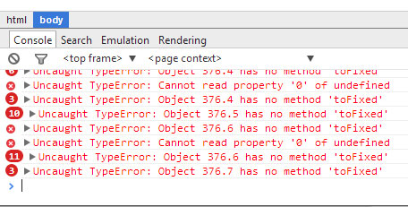

Since upgrading to v8.0, I've noticed that the dial widget displays NaNW whenever the corresponding feed value (Timestore) is zero (0.0).
It displays OK when any other value.
.png)
_0.png)
For example, when my solar PV is not producing energy;
_2.png)
Paul
Edited 22/3/14 - additional screenshot added
Re: SORTED -v8.0.2 - Dial Widget showing NaNW
Im having difficulty replicating this, do you see any errors in your console window?
Re: SORTED -v8.0.2 - Dial Widget showing NaNW
Console window? Not sure what you mean.
Paul
Re: SORTED -v8.0.2 - Dial Widget showing NaNW
Just updated master with a type cast for rawValue to float which should do it. Not sure why it didnt show as an issue on my machine
The browser console window, is usually accessible under Developer tools, for your dashboards it showed the error:
TypeError: rawValue.toFixed is not a function
which can only happen if rawValue is not a number, adding the type cast should ensure it is a number and hopefully fix the problem.
Thanks for testing and flagging it, much appreciated
Re: SORTED -v8.0.2 - Dial Widget showing NaNW
Just updated, rebooted & cleared browser cache - still the same.
Checked developer tools which shows error;
Uncaught TypeError; Object 660.1 has no method 'to fixed'
Paul
Re: SORTED -v8.0.2 - Dial Widget showing NaNW
Hmm strange, I've made some more changes, can you try again now?
Re: SORTED -v8.0.2 - Dial Widget showing NaNW
OK Back home now.
No, still not working. The correct values (if any) are not being displayed in the dials, and the developer console still showing errors.
Paul
Re: SORTED -v8.0.2 - Dial Widget showing NaNW
For me, values below -10.0 W just disappear (empty text).
Re: SORTED -v8.0.2 - Dial Widget showing NaNW
Thanks Jörg - at least it's not just mine!
Screenshot of the errors

Paul
Re: SORTED -v8.0.2 - Dial Widget showing NaNW
I think, if else should be used in the calculations. If rawvalue is e.g. -20W then it is converted to a string already by the line
if(rawvalue<10) rawValue = rawvalue.tofixed();
Then in the next line .tofixed is used on a string which does not work.
Does this make sense (I have no idea about js).
EDIT:
I did it like this now (and it seems to work for me):
if (rawValue>=100)
rawValue = rawValue.toFixed(0);
else if (rawValue>=10)
rawValue = rawValue.toFixed(1);
else if (rawValue<=-100)
rawValue = rawValue.toFixed(0);
else if (rawValue<=-10)
rawValue = rawValue.toFixed(1);
else
rawValue = rawValue.toFixed(2);
Re: SORTED -v8.0.2 - Dial Widget showing NaNW
Well the update just now appears to have fixed the dials,
but the Realtime graphs have stopped working (I think they stopped with the merge before this one!)Edit - a reboot got them working again!Paul
Re: SORTED -v8.0.2 - Dial Widget showing NaNW
Managed to replicate the issue, I needed to test with a feed value above 100 to make the bug appear. I've have pushed up the change to github
Re: SORTED -v8.0.2 - Dial Widget showing NaNW
in fact Raw graphs have stopped ...
Raw graphs still work for me. But realtime does not. Funny stuff ....
Edit:
is there something wrong with using 'else' in js?(No, I have just seen it is used everywhere in the code) Should reduce processing time compared to your version, Trystan.Re: SORTED -v8.0.2 - Dial Widget showing NaNW
The current code:
if (isNaN(rawValue)) rawValue = 0;
if (rawValue>=10) rawValue = rawValue.toFixed(1);
if (rawValue>=100) rawValue = parseInt(rawValue);
if (rawValue<10) rawValue = rawValue.toFixed(2);
if (rawValue<=-10) rawValue = rawValue.toFixed(1);
if (rawValue<=-100) rawValue = parseInt(rawValue);
still doesn't work. Any value less
thanor equal -10 produces the same error.Re: SORTED -v8.0.2 - Dial Widget showing NaNW
Despite a little earlier confusion! (working from an iPhone, etc...)
Everything is working fine now, graphs & dials, with the exception that as Jörg has pointed out, any value less or equal to -10 stops the dial functioning and results in no value being displayed.
Paul
Re: SORTED -v8.0.2 - Dial Widget showing NaNW
Paul,
did you try my code instead (combined with Trystans first line to cope with NaN values)?
if (isNaN(rawValue)) rawValue = 0;
if (rawValue>=100)
rawValue = rawValue.toFixed(0);
else if (rawValue>=10)
rawValue = rawValue.toFixed(1);
else if (rawValue<=-100)
rawValue = rawValue.toFixed(0);
else if (rawValue<=-10)
rawValue = rawValue.toFixed(1);
else
rawValue = rawValue.toFixed(2);
Re: SORTED -v8.0.2 - Dial Widget showing NaNW
Fixed the below -10 issue, I better not say anything too soon but it seemed that:
rawValue = (rawValue*1).toFixed(1)
works ok while
rawValue = rawValue * 1;
rawValue = rawValue.toFixed(0)
gives errors.
Re: SORTED -v8.0.2 - Dial Widget showing NaNW
Yes! I can confirm - fixed and everything back working.
Tested from +1000 to -1000
Paul
Re: SORTED -v8.0.2 - Dial Widget showing NaNW
Can you see any other visualisation errors that would be good to fix while Im at it? I tried all the other widgets and they seemed to work ok. checked the realtime graphs working ok here I think.
I will tag the result of this as v8.0.3
Re: SORTED -v8.0.2 - Dial Widget showing NaNW
Wouldn't it be nice to have the same number displayed in dials as in feedvalues? At the moment, feedvalues have maximum 1 decimal place (9.1W) whereas dial values have two decimal places (9.14W). This is not a big deal, but it is also not difficult to correct.
And the behavior of feedvalues is also not consistent. Values >100W are shown without decimal places (105W), values <-100W with one decimal place (-105.2W).
Same for bar values. Again a different behaviour. All values below 10 are shown with two decimal places (also -120.45W).
Why not use the same code for all?
Re: SORTED -v8.0.2 - Dial Widget showing NaNW
Jörg, my preference would be to have the same number displayed in feedvalues as dials!
Paul
Re: SORTED -v8.0.2 - Dial Widget showing NaNW
Jörg, my preference would be to have the same number displayed in feedvalues as dials!
... and in bar values, too!
Re: SORTED -v8.0.2 - Dial Widget showing NaNW
I would use this everywhere:
if (isNaN(rawValue)) rawValue = 0;
if (rawValue>=100)
rawValue = rawValue.toFixed(0);
else if (rawValue>=10)
rawValue = rawValue.toFixed(1);
else if (rawValue<=-100)
rawValue = rawValue.toFixed(0);
else if (rawValue<=-10)
rawValue = rawValue.toFixed(1);
else
rawValue = rawValue.toFixed(2);
Gives -102W, -99.5W, -0.01W, 0.00W, 0,01W, 99.5W, 102W.
Or:
if (isNaN(rawValue)) rawValue = 0;
else if (rawValue>=100)
rawValue = rawValue.toFixed(0);
else if (rawValue>=10)
rawValue = rawValue.toFixed(1);
else if (rawValue<=-100)
rawValue = rawValue.toFixed(0);
else if (rawValue<=-10)
rawValue = rawValue.toFixed(1);
else
rawValue = rawValue.toFixed(2);
Which gives -102W, -99.5W, -0.01W, 0W, 0,01W, 99.5W, 102W.
And which I like even better.
Re: SORTED -v8.0.2 - Dial Widget showing NaNW
Ok great, Il add that in
Re: SORTED -v8.0.2 - Dial Widget showing NaNW
checked the realtime graphs working ok here I think.
After updating the realtime.php it works for me, too. Must have missed that somehow.
Re: SORTED -v8.0.2 - Dial Widget showing NaNW
Everything working here too, thanks for your efforts today Trystan.
Paul
Re: SORTED -v8.0.2 - Dial Widget showing NaNW
Paul, Trystan, It is a bit off-topic here, but we have already spoken about it ... so:
I still have a problem with realtime graphs and the '1 min' window. In Firefox and Chrome I see no data and I get an error in the console that the datalength is not defined (datalength is 0 and the code wants to access data[datalength-1]).
Do you see the same thing?
I can solve this if i change line 40 in realtime.php from:
<button class="viewWindow" time="0.01">1 <?php echo _('min') ?></button>
to
<button class="viewWindow" time="0.017">1 <?php echo _('min') ?></button>
Trystan, is this ok? 1 minute is 0.016666 * 1 hour.
And yes, Trystan, thank you very much for all your efforts!
Re: SORTED -v8.0.2 - Dial Widget showing NaNW
Seems to work OK for me, Chrome browser Version 33.0.1750.154 & Firefox v26.0
Paul
Re: SORTED -v8.0.2 - Dial Widget showing NaNW
I am using exactly the same Version 33.0.1750.154 m (and Firefox 28.0). Hmmm......
Your feed seems to get a new value every 4 to 5 seconds, my feed gets a new value every 10 seconds. Does this make a difference?
Ok, and your 'window' width is not 1 min but only ~35-40s. This would get fixed by my small change above.
Re: SORTED -v8.0.2 - Dial Widget showing NaNW
Your feed seems to get a new value every 4 to 5 seconds, my feed gets a new value every 10 seconds. Does this make a difference?
No, mine also works fine on a temperature sensor that updates every 20 seconds too.
But yes, it should display 60 seconds of data, but as the screenshot shows - it doesn't.
Why not make a pull-request via Github to make the change?
Paul
Re: SORTED -v8.0.2 - Dial Widget showing NaNW
Ähem, I am not used to Github, pull requests and the like ...
I think the changes to do are quite clear:
lines 39 and 40 should be changed to:
<button class="viewWindow" time="0.083333">5 <?php echo _('min') ?></button>
<button class="viewWindow" time="0.01666">1 <?php echo _('min') ?></button>
The 'default' should be a '5 min' window (agreed ? At the moment it is 6 minutes), so line 53 should be changed to:
var timeWindow = (3600000*0.083333); //Initial time window
Can you do this, please? Or Trystan?
EDIT: I think I understand where the problem lies in my realtime graphs. The database and Emoncms is running on my server and I am using Chrome or Firefox on another computer. If there is a system time difference between the two computers, then there is a chance that the web server is requesting data from the server for a time window that lies completely in the future. And then it will get no data at all. Is this feasible? I found this by 'adjusting' the system time on the server. Is this something that has to be solved?
Re: SORTED -v8.0.2 - Dial Widget showing NaNW
I've added your code in Jorg with the (val*1) and tested, also corrected the realtime time window values.
Yes I think your right about the server vs system time issue for the realtime graph. Not sure how to fix it, maybe the browser needs to get the server time and calculate an offset.
By bar values do you mean the bar graph statistics?
At the moment the following rule's apply:
if ((item.datapoint[1]) < 1)
{
$("#stats").html(((item.datapoint[1]) * 1000 ).toFixed(1)+"Wh | "+mdate.format("ddd, mmm dS, yyyy"));
}
else
{
$("#stats").html((item.datapoint[1]).toFixed(2)+"kWh | "+mdate.format("ddd, mmm dS, yyyy"));
}
Re: SORTED -v8.0.2 - Dial Widget showing NaNW
Trystan,
why is the (val*1) necessary? Is it for some browsers? After checking that val is not NaN, it should not be necessary to convert it to a number explicitly.
With bar values I mean the bar widget. It also shows a numerical value similar to dial and feedvalue. Code is in bar_render.js.
BR, Jörg.
Re: SORTED -v8.0.2 - Dial Widget showing NaNW
Yes, strange behavior, see the post Sun, 23/03/2014 - 20:54 above, it was this that caused a lot of the problem yesterday, (val*1) seemed to fix it, I dont remember this being a problem before though..
Re: SORTED -v8.0.2 - Dial Widget showing NaNW
Yes, but at that time your code was just wrong (sorry to say that).
If you do the decision without else clauses, then rawValue is evaluated several times.
if (isNaN(rawValue)) rawValue = 0;
if (rawValue>=10) rawValue = rawValue.toFixed(1);
if (rawValue>=100) rawValue = parseInt(rawValue);
if (rawValue<10) rawValue = rawValue.toFixed(2);
if (rawValue<=-10) rawValue = rawValue.toFixed(1);
if (rawValue<=-100) rawValue = parseInt(rawValue);
Take -120W as an example.
Then if(rawValue<10) is already true and rawvalue is converted to a string (by the .tofixed() method).
Then the next evaluation is also true (if(rawValue<-10) and .tofixed() is applied to a string, which is not allowed.
(and then, the next comparison is again true and the calculation is done a third time. This is why I said that the construction with else would be more efficient).
Re: SORTED -v8.0.2 - Dial Widget showing NaNW
ah thats it! of course toFixed converts it to a string! that makes sense now.
cool, will remove the (val*1)